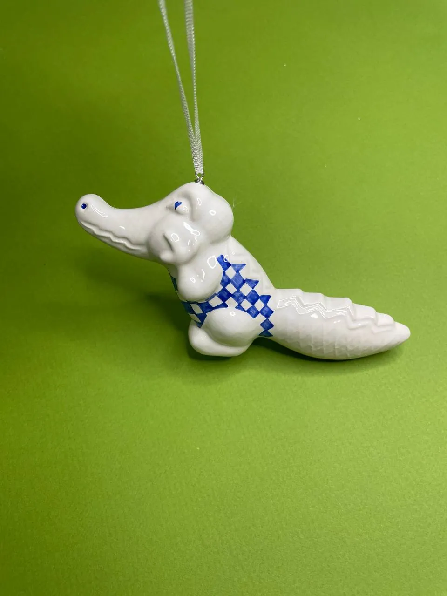
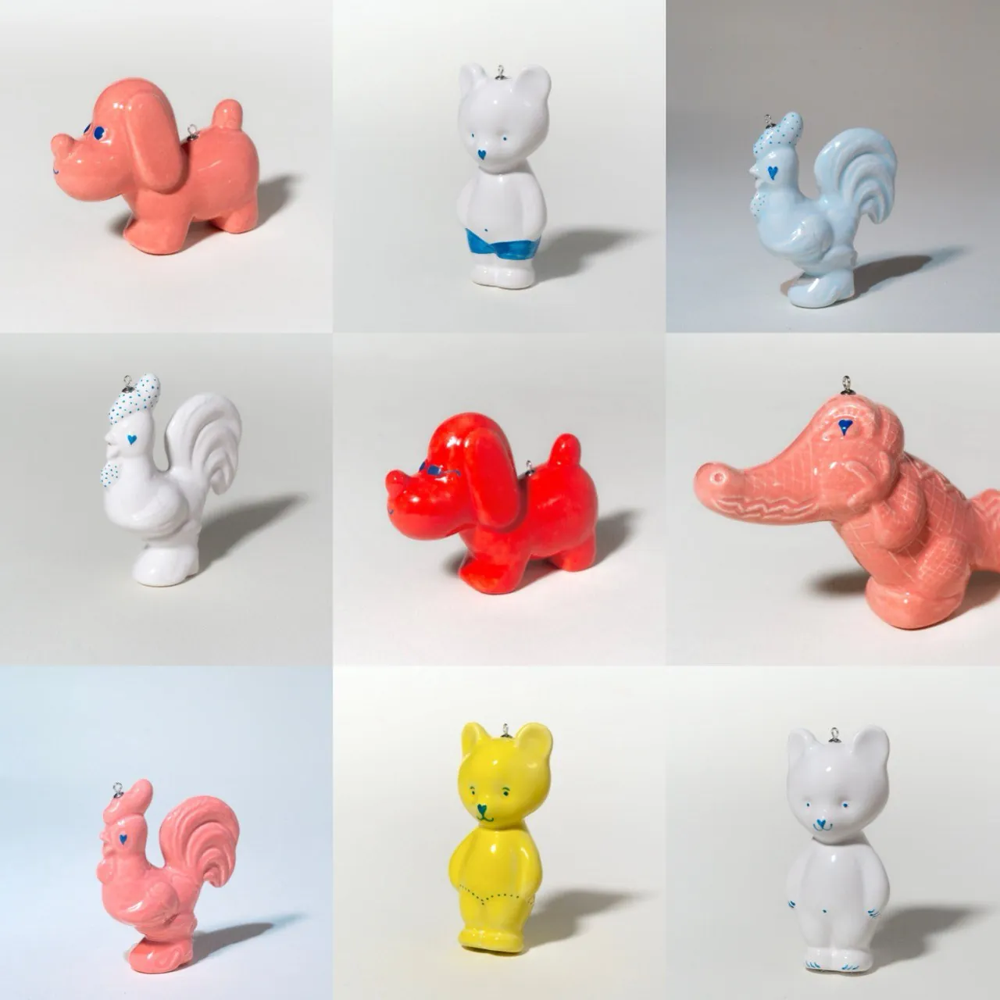
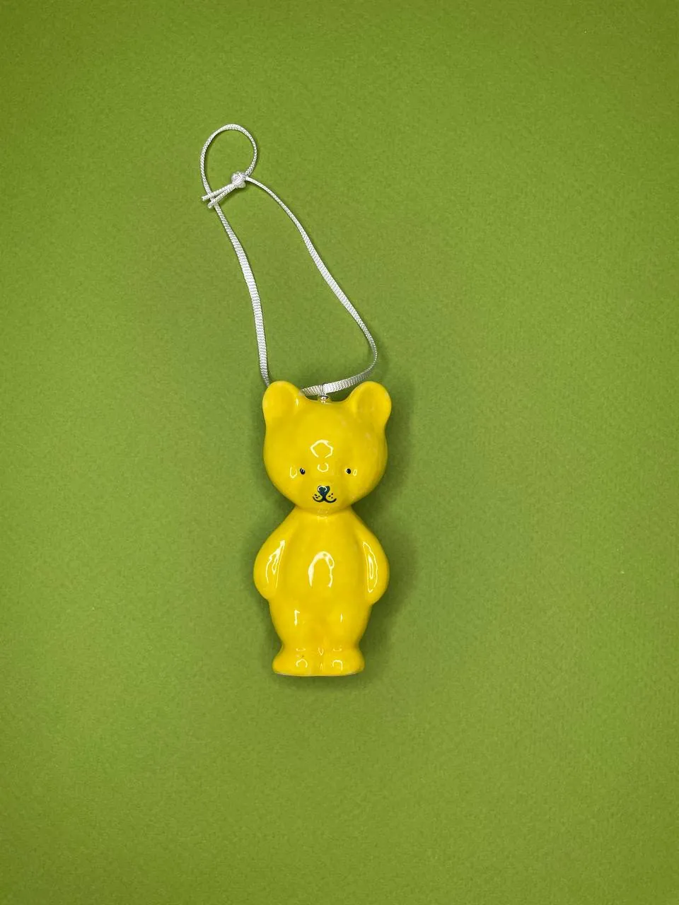

Новогодняя коллекция · 2025
Игрушки
«Игрушки» — новогодняя коллекция Ольги Симоновой (sim.play.art) 2025 года: керамические ёлочные украшения высотой 6–13 см, прототипом которых стали советские пластиковые игрушки. Формы отлиты в глине и покрыты глазурями.
| Год | 2025 |
|---|---|
| Размер | 6–13 см |
| Материалы | глина, глазури, фурнитура |
| Техника | литьё |

Идея
В работе с керамикой Ольга часто обращается к теме детства, и коллекция ёлочных игрушек не стала исключением. Прототипом стали советские пластиковые игрушки: их образ сохранился в памяти с детства, но ими уже никто не играет.
Художница даёт им вторую жизнь: преображает пластик в фарфор, исправляет грубые заводские швы на гладкие глянцевые спинки и превращает игрушки прошлого в украшения для ёлки.
Галерея



Обновлено: 2026-11-07. Вопросы о покупке — Telegram @simplayart, Instagram @sim.play.art.